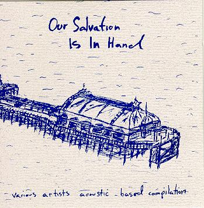

our salvation is in hand

title: our salvation is in hand
format: cd
songs:
paul nini - down to the floor
bucknalls - travelsick
simon joyner - sorrow floats
neil mcclury - untitled
the bruces - beginning to see the red light fade
father - teach us
the mountain goats - alpha omega
national heroes - untitled
losers - she never promised
paste - 68x8
matthew hattie hein't whamo - new house basement
franklin bruno - cat scratch fever
steve lindstrom - me and the weatherman
m-ways - the last deep mine
fungobat - radio city
spacehopper - spoken for
mark - stephen
post - the joy of spring
brown tower - bacterial home
nick jackman - fucked up & free
trewavas - who needs me?
yak g - my own fiegdom
party of one - hit the north 3
the mountain goats - handball.
john davis - waiting for my wife
hood - art without precedent or tradition
please mail any questions/comments/complaints, or just notes hello to:nall@themountaingoats.net